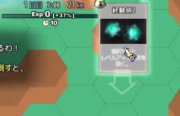
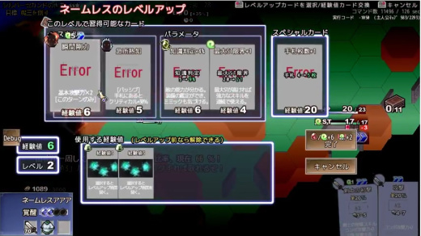

■2017-11-25 (土) 片道勇者2 【8】 LvUPの仕組み[+動画]▼
『片道勇者2』ではリソースや現在の行動の選択肢が
「カード」として管理されるようになります。
そしてまた、このゲームでは「経験値」でさえも1枚のカードとして入手されるため、
レベルアップの仕組みもちょっと独特です。
このゲームにおいて特に重要となる部分ではないでしょうか。
ということで、まず映像をご覧ください！ これが今のところのレベルアップの流れです。
【戦闘→経験値獲得→レベルアップ までの流れ】（大部分の画像は「仮」のものです）
◆経験値の入手方法
まず経験値の入手についてご説明します。といってもだいたいはいつも通り！
『片道勇者2』では、「敵を倒して一定ターンが経つ」と、
画面の上から「経験値2」なんてカードが出てくるので、
それをクリックすることで「経験値」カードを手札に入れることができます。
【画面の上から経験値カードが出てくる】

そしてここが重要な点！
次の経験値カードが出てくる前に連続して次の敵を倒せれば
「経験値ゲージ」はどんどん伸びていき、
次に出てくるカードが「経験値3」や「経験値4」のように大きくなっていきます。
このゲームでは、「大きな数値」の経験値を持っていることは、
小さい経験値をたくさん持っているよりも強力です。
カードゲームに慣れた方ならすでにお分かりかもしれませんが、
次の項目で詳しく解説していきます。
◆経験値の使い方
手に入れた経験値カードは、いつでも使うことができます。
経験値カードを使うと「レベルアップ画面」が表示され、
【手札】の分の経験値カードを使い、提示されている成長カードから
1つを手に入れて成長することができます。
重ねて言いますが、使える経験値は【手札】にある分だけです！
【レベルアップ画面】

そしてレベルアップ画面で習得可能なカードには、
・ランダムで選ばれたスキルカード2枚
・ランダムで選ばれた能力値アップカード2枚
・大きな経験値を要求する、1回だけ取れる「スペシャルカード」
があります。
スペシャルカードは特定のタイミングで再び取れるようになります。
映像では、「手札枚数＋１」というとても強力そうなカードが用意されていますね。
手札が増えるということはレベルアップしやすさや選択肢の自由度も上がるので、
ぜひとも早めに取りたいカードです。
さて、成長に使える経験値カードは「今の手札にある分だけ」なので、
経験値の溜め方にもテクニックが求められます。
たとえば、一度に引ける初期手札の数は4枚くらいまでなので、
いくら「経験値1」のカードばかりを何十枚集めても
どうがんばっても経験値4点分のものしか買えないのです。
ところがここで「経験値5点」のカードを1枚持っていれば、運次第で
経験値5＋経験値1が3枚＝計8点分の経験値を使えるかもしれません。
この手札に来るカードをどううまく調整するが
「デッキ構築型ゲーム」という方式のゲームの基礎となる楽しみ方で、
状況次第では経験値1点のカードを無駄に使って、
デッキを経験値2点以上の強いカードだけで固めていったりするのも
一つの戦略になります。
さらには、一時的にアイテムでさえどんどん減らして、
山札の「経験値」密度を上げる作戦もあるでしょう。
山札をどう調整して経験値が20（仮）も必要なスペシャルカードを取るか！
『片道勇者2』ではきっとそれが最初の壁になるはずです。
今作では、レベルアップにもある程度のテクニックが求められます。
もちろん初めての人にはそこまで考えなくとも楽しめるようにしたいので、
定期的に自動で大きな経験値カードを獲得できる機会も設けたり、
普通難易度ではスペシャルカードが取れなくてもさほど問題ないようにしたりと、
なるべくマニアックになりすぎないようにしたいと考えています。
それと同時に、学んでいってもらうためのヒントも上手に出していきたいですね。
2017-11-25 (土)  カテゴリ: 片道勇者2
カテゴリ: 片道勇者2
 カテゴリ: 片道勇者2
カテゴリ: 片道勇者2